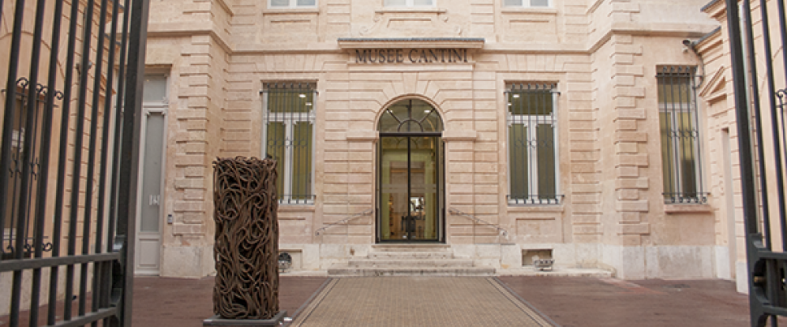
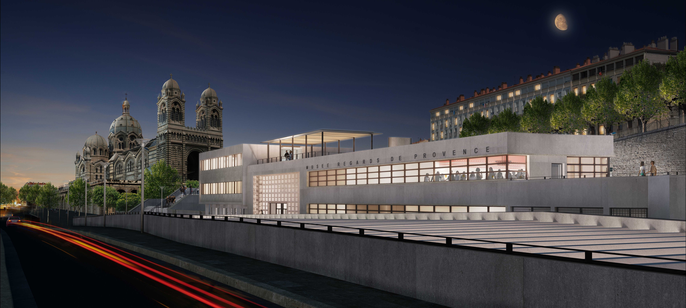

MUSEES
Bienvenue à Marseille, une ville riche en histoire, en culture et en art. Explorez avec nous les trésors cachés et les joyaux artistiques que renferment les musées de cette cité méditerranéenne. Des expositions captivantes aux collections fascinantes, plongez dans l'univers artistique diversifié de Marseille.
Musée d'Histoire de Marseille
Le Musée d'Histoire de Marseille est un véritable voyage dans le passé, offrant aux visiteurs un aperçu captivant de l'évolution de la ville au fil des siècles. Situé dans le Centre Bourse, le musée présente une collection impressionnante d'objets archéologiques, de maquettes, et de reconstitutions qui racontent l'histoire de Marseille depuis ses origines grecques Vous y découvrirez des vestiges antiques, des artefacts médiévaux, ainsi que des expositions interactives mettant en lumière les moments clés de la cité phocéenne. Du port antique au Marseille contemporain, le musée propose une expérience immersive pour comprendre les influences culturelles, économiques et sociales qui ont façonné la ville au fil des millénaires. Une visite au Musée d'Histoire de Marseille est un incontournable pour ceux qui souhaitent explorer les racines profondes de cette cité méditerranéenne.

Musée des Civilisations de l'Europe et de la Méditerranée (MuCEM):
Le Musée des Civilisations de l'Europe et de la Méditerranée (MuCEM) est une institution culturelle emblématique de Marseille, située à l'entrée du Vieux-Port. Inauguré en 2013, le MuCEM se distingue par son architecture contemporaine, mariant verre et béton, créée par l'architecte Rudy Ricciotti. Le musée se consacre à l'exploration des cultures méditerranéennes, mettant en avant la diversité des civilisations qui ont marqué cette région. Les expositions du MuCEM abordent des thèmes tels que l'anthropologie, l'histoire, les traditions populaires, et les échanges culturels. Avec une collection riche et des expositions temporaires variées, le MuCEM offre une perspective moderne et engagée sur les enjeux sociétaux liés à la Méditerranée.
Musée Cantini:
Le Musée Cantini, situé dans le 6e arrondissement de Marseille, est dédié à l'art moderne et contemporain. Hébergé dans un superbe hôtel particulier du XVIIe siècle, ce musée offre une expérience artistique riche et variée. La collection du Musée Cantini met en avant des œuvres d'artistes majeurs du XXe siècle, tels que Picasso, Braque, Delaunay, Duchamp, et bien d'autres. Les visiteurs peuvent y admirer des peintures, sculptures, dessins et photographies représentant divers mouvements artistiques, de l'impressionnisme au surréalisme. Outre ses expositions permanentes, le musée organise régulièrement des expositions temporaires, élargissant ainsi sa palette artistique et offrant aux visiteurs une expérience renouvelée. Avec son atmosphère élégante et son engagement envers l'art moderne, le Musée Cantini est un lieu incontournable pour les amateurs d'art contemporain à Marseille.
Musée Regards de Provence
situé sur l'esplanade du J4, face au Fort Saint-Jean, se distingue par sa focalisation sur l'art provençal du XXe siècle à nos jours. Installé dans un bâtiment moderne qui contraste avec le caractère historique des environs, ce musée offre une perspective unique sur la région méditerranéenne. La collection du Musée Regards de Provence met en lumière la diversité artistique de la Provence à travers des peintures, sculptures, photographies et autres formes d'art. Les œuvres exposées capturent l'essence de la vie provençale, mettant en avant les paysages, les traditions et les évolutions socioculturelles de la région. Le musée s'engage également à promouvoir des artistes contemporains liés à la Provence, offrant ainsi une plateforme dynamique pour l'expression artistique locale. Les expositions temporaires viennent enrichir la programmation, assurant une expérience renouvelée pour les visiteurs. Avec sa situation privilégiée offrant une vue sur le Vieux-Port et le Fort Saint-Jean, le Musée Regards de Provence constitue un lieu où l'art contemporain rencontre l'héritage culturel de la Provence, créant une expérience immersive pour les amateurs d'art et les curieux de la région.rovence:
